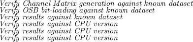

In order to fully specify the development of a solution, a task list with appropriate milestones was required to monitor progress and maintain framework stability. This was implemented specifically so that experimental development (or branching) could be explored freely in different development areas (to be detailed), while still allocating time for framework and algorithm re-factoring to leverage shared-object functional decomposition. This task-list mirrors the expanded project objectives in Section 1.2, with additional developmental details.

Andrew Bolster
2011-05-22